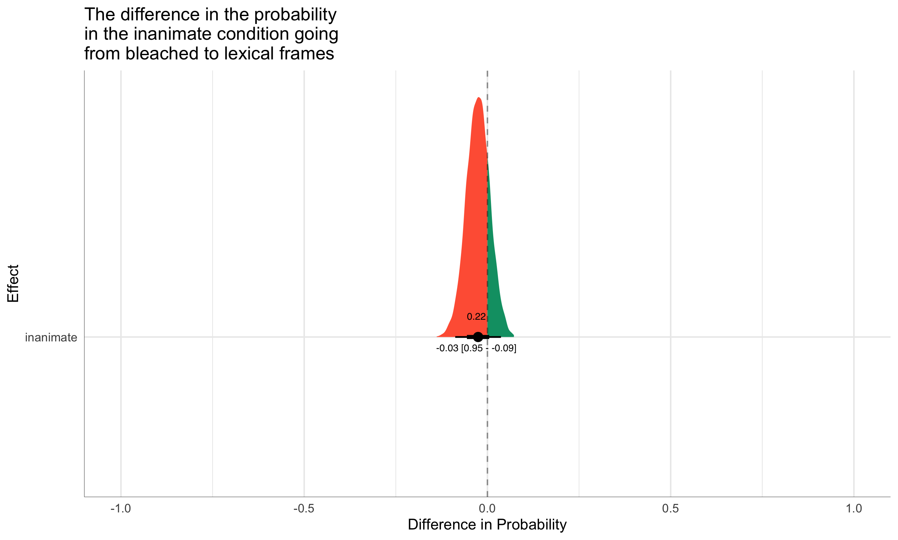

| Parameter | Median | HDI | % in ROPE | MPE | Rhat | ESS |
|---|---|---|---|---|---|---|
| Intercept | 1.08 | [0.17, 1.55] | 0.00 | 0.99 | 1.04 | 103 |
| animate | -0.74 | [-1.00, -0.48] | 0.00 | 1.00 | 1.00 | 2873 |
| lexical | 0.21 | [-0.06, 0.50] | 0.41 | 0.93 | 1.01 | 521 |
| animate:lexical | -0.32 | [-0.69, 0.04] | 0.23 | 0.96 | 1.00 | 2676 |
Task 1 analysis
Overview
- Word Learning - Multiple target frames in a trial You can preview the inanimate-bleached condition of the task here, if you’re interested.
Procedure: Participants were presented with a set of videos with a dialogue between two speakers featuring a novel word. At the end of each trial, they were asked to provide their guess about the novel word’s meaning, and indicate their confidence level (scale: 1-4). Within each target adjective trial, participants head the target novel adjective across multiple syntactic frames, the combination of which narrowed the hypothesis space of meaning to one particular subgroup of emotion adjectives.
Guesses were manually coded post-hoc as “adjective” (0: not adjective, 1: adjective) and then further as “emotion adjective” (0: not emotion adjective; 1: emotion adjective) independently by two researchers, with discrepancies between 0 and 1 resolved in consultation.
Overall, the results suggest that later guesses were more often emotion adjectives and they were rated more highly in all 4 conditions
Statistical Analysis
Like experiment 2, a Bayesian multilevel logistic regression was a done in order to determine the probability of guessing an emotion adjective. In the model, the fixed effect predictors were animacy condition (2 levels: animate, inanimate), frame condition (2 levels: bleached, lexical). The model also included random intercepts for participant and word to account for the nested structure of the data. All model priors were the default in brms, a student’s T distribution with 3 degree of freedom. All models were fit with 4000 iterations (1000 warm-up). Hamiltonian Monte-Carlo sampling was carried out with 6 chains distributed between 6 processing cores.
Note: I’ve left much of the analysis descriptive and can provide more numbers, tables or models where you see fit.
Results
a) proportion of emotion adjective guesses (out of ALL guesses - sum adj and non-adj guesses)**
Overall, the majority of guesses were classified as adjectives (93%). Of those, 75% were coded as emotion adjectives.
Compare guesses for target trials across conditions (look for main effects and interactions)
The logistic model is summarized in Table 1 (this can be included in the body of a paper or the appendix). The specific interpretation of the model output is discussed in the subsequent sections in more detail.
Note: This model will need to be re-examined since there were some sampling issues. I suspect that there are some influential data points that make it difficult to model, but need to dig deeper to be sure. The models should be okay for a presentation, but will need to be refined for publication
Did animacy matter?
Similar to task 2
Yes: emotion adjective guesses were highly probable in the animate condition (0.9 HDI [0.57 -1]). Guesses for inanimate adjectives were less likely to be emotion adjectives 0.65 HDI [0.01 -0.53].
Did frame matter?
Similar to task 2
Not as much. Overall, the was less of a difference in frame (before we consider the interaction). That is, “overall” refers to the pooled estimates of a given frame of both animate and inanimate subjects. The probability of an emotion adjective in the lexical frame was 0.8 HDI [0.04 -0.48]. The probability of an emotion adjective in the bleached frame was 0.74 HDI [0.03 -0.55].
What did the interaction of animacy and frame look like?
We do see clear differences in the interaction of animacy and frame. Specifically: The probability of an emotion adjective in the lexical frame with an inanimate subject was 0.72 HDI [0.03 -0.54]. The probability of an emotion adjective in the bleached frame with an inanimate subject was 0.57 HDI [0.01 -0.52]. The probability of an emotion adjective in the lexical frame with an animate subject was 0.89 HDI [0.45 -0.7]. Finally, the probability of an emotion adjective in the bleached frame with an animate subject was 0.91 HDI [0.68 -1].
We have the same plot options here that I offered for task 2
We have a few options for plots here. Both plots below show the same information (the posterior distribution of the probability of guessing an emotion adjective), but present with a different fixed effect on the y-axis. In Figure 1, animacy is on the y-axis. In this plot we can see that the probability of guessing an emotion adjective is very similar in the bleached and lexical frames when the subject is animate. On the other hand, lexical frame does make a difference when the subject is inanimate.
Figure 2 has the frame condition on the y-axis. This shows us that words with animate subjects are more likely to be guessed as emotion adjectives than ones with animate subjects in both lexical and bleached frames. These two plots are derived from the same model, but provide different insights. Depending on which one answers the research question better, we can include it.
Effect Sizes
Just as for some previous work, I included an two example effect size plots that plot the difference between the posterior distributions in Figure 1. Figure 3 shows all plausible differences in the effect of frame (going from bleached to lexical) in the inanimate condition. The number inside to distribution is the probability of the effect being positive (a 1 indicates that we are 100% sure the effect is positive based on our data). The numbers below the data points are the mean of the the distribution (or the most probable effect size), and the upper and lower bounds of the 95% Highest Density interval (HDI). Figure 4 shows the same information in the animate condition. In this case, we see that the probability of positive effect is .39, suggesting that we are unsure of the direction of the effect. In other words, we can’t conclude that frame made a difference when the subject was animate. On the other hand, we do see compelling evidence that frame is important when the subject is inanimate.

ALL GUESSES - Compare 1st guess for target trials across conditions
We can see in Figure 5 that the proportion of emotion adjective guesses was very low in all 4 conditions at first guess.
ALL GUESSES - Compare 2nd and 4th guesses for target trials across conditions (increase in emotion adj guesses?
However, Figure 6 shows that the proportion of emotion adjective guesses increase in all 4 conditions as a function of guess.
b) proportion of emotion adjective guesses (out of all ADJ guesses)**
Compare guesses for target trials across conditions (look for main effects and interactions)
Do we want to run another model for this? It seems less cluttered to me to run a logistic regression for one or the other (the probability of an emotion adjective out of either all guesses or adjective guesses).
Compare 1st guess for target trials across conditions Again we see in Figure 7 that the proportion for emotion adjective guesses was low in all conditions. Bleached/animate was the only condition that had any emotion adjective guesses.
Compare 2nd and 4th guesses for target trials across conditions (increase in emotion adj guesses?)
c) confidence level (1-4)
Compare final confidence rating for target trials across conditions
Figure 9 shows the distributions of ratings as a by condition for the final guess. 2 was the most common rating in each case.
Compare first to last guess for target trials across conditions (increase in confidence?)
Figure 10 shows that the mean confidence rating increased in all 4 conditions from guess 1 to guess 4.